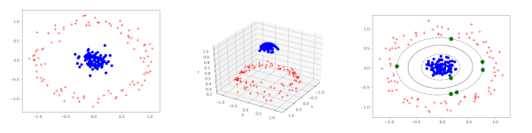
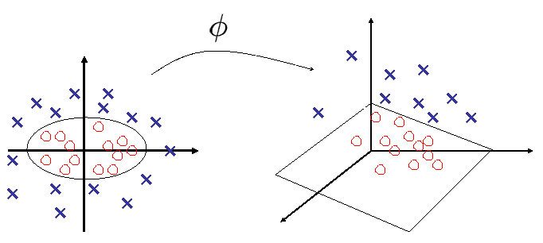

Astuce du noyau
Contents
De manière très macroscopique, il s’agit de transformer les données de \(\mathbb{R}^d\) en des vecteurs \(\mathbf z\in \mathbb{R}^{d'},d'>d\) (voire dans un espace \(E\) général, de dimension possiblement infinie), via une fonction \(\mathbf z = \phi(\mathbf x)\) en choisissant \(\phi\) de sorte que les données d’entraînement \(\{ \phi(\mathbf x_i), y_i \}\) soient linéairement séparables dans \(\mathbb{R}^{d'}\) (ou linéairement séparables avec probabilité 1, en vertu du théorème de Cover).
Astuce du noyau#
La kellipse-ref présente un exemple simple du principe développé ci-après.

Exemple simple de données concentriques 2D, non linéairement séparables dans le plan, mais séparables en 3D lorsque \(\phi\) est une simple fonction à base radiale
Choix de \(\phi\)#
Existence de \(\phi\)#
Première question à se poser, \(\phi\) existe t elle ? La réponse est donnée par le théorème de Cover.
Soient \(\mathcal S\) une famille de surfaces et \(\mathcal{H} = \{\mathbf x_1\ldots \mathbf x_n\}\) un ensemble de vecteurs \(\mathbf x_i\in X\), \(\mathbf x_i\) de classe \(y_i \). On considère un problème de classification binaire pour lequel \(y_i\in \mathcal{H}_1\) où \(y_i\in\mathcal{H}_2\)
On dira que \(\mathcal{H}\) est séparable par rapport à \(\mathcal{S}\) s’il existe \(S_i\in\mathcal{S}\) réalisant la classification \(\mathcal{H}_1 / \mathcal{H}_2\) de \(\mathcal{H}\).
Pour tout \(x_i\in \mathcal{H}\), on construit alors
avec pour \(1\leq j\leq m\) \(\phi_j:X\mapsto\mathbb{R}\) et \(\mathcal{F} = \left \{\phi_j(\mathbf x), 1\leq j\leq m\right \}\) l’espace des caractéristiques.
Une dichotomie \(\left (\mathcal{H}_1,\mathcal{H}_2\right )\) de \(\mathcal{H} \) sera dite \(\phi\)-séparable s’il existe \(\mathbf w\in\mathbb{R}^m\) tel que
Dans ce cas, \(\mathbf w^T\mathbf{\phi(\mathbf x)}=0\) est l’hyperplan séparateur dans \(\mathcal{F}\) et son image réciproque, \(\{\mathbf x\in X, \mathbf w^T\mathbf{\phi(\mathbf x)}= 0\}\) est la surface séparatrice dans \(X\).
On considère une classe de fonctions (mappings, formant un espace d’hypothèses) obtenues par combinaisons linéaires de produits de \(r\) composantes de \(x\). Les surfaces de séparation correspondantes sont des variétés rationnelles d’ordre \(r\), surface décrite par une équation homogène du type
avec \(x_0=1\). \(x_{i_1}\ldots x_{i_r} \) est un monôme.
Dans un espace de dimension \(m\), il y a \(\frac{(m-r)!}{m!r!}\) monômes.
si \(r=1\) les surfaces de séparation sont des hyperplans
si \(r=2\), les surfaces séparatrices sont des quadriques.
Dans un contexte probabiliste, la séparabilité de \(\mathcal{H}\) est un évènement aléatoire qui dépend de la dichotomie choisie et de la distribution de \(\mathcal{H}\) dans \(X\). Si on suppose :
que les \(x_i\) sont tirés i.i.d. selon une loi de probabilité sur \(X\)
que toutes les dichotomies sont équiprobables
alors en notant \(P(n,m_1)\) la probabilité qu’une dichotomie tirée au hasard soit \(\phi\)-séparable,où \(n\) est le nombre de points de \(\mathcal{H}\) et \(m_1\) est le nombre de degrés de liberté de la classe de surfaces séparatrices, Cover [Cov65] a montré que
Théorème de Cover
où \( \begin{pmatrix} i\\ j \end{pmatrix} =\frac{i!}{j!(i-j)!}\)
Le théorème de Cover affirme ainsi que plus \(m_1\) augmente, plus \(P \left( n , m _ { 1 } \right) \) est proche de 1.
En d’autres termes :
Dans un espace de dimension \(d\), la probabilité que deux classes quelconques de \(d\) exemples ne soient pas linéairement séparables tend vers 0 lorsque \(d\rightarrow\infty\).
Si \(d>n\), on peut toujours trouver un hyperplan séparant les exemples (ne garantit pas la capacité de généralisation)
Pour l’appliquer, deux ingrédients sont essentiels :
des fonctions non linéaires \(\phi_i\)
une dimension de l’espace des caractéristiques très importante en regard de la dimension de \(X\).
Le résultat précédent, valable pour des fonctions polynomiales, se généralise à d’autres familles de fonctions. Notons que la définition analytique des fonctions \(\phi_i\) n’est pas toujours facile, et l’astuce du noyau permet de s’affranchir de cette difficulté.
Choix de \(\phi\)#
Deuxième question : comment choisir \(\phi\) ? Il ne s’agit bien sur pas de construire explicitement cette fonction. Il s’agit également de prendre garde à la taille de l’espace d’arrivée (\(d'\)), les calculs pouvant devenir prohibitifs et le sur apprentissage pouvant également apparaître.
Etant donné \(\mathbf z = \phi(\mathbf x)\), on remplace alors \(\mathbf x\) par \(\mathbf z\) dans la formulation du problème QP :
avec \((H)_{ij} = y_iy_j(\phi(\mathbf x_i) ^T \phi(\mathbf x_j))\). La détermination de \(\mathbf w\) est alors
et la fonction de décision
Chaque occurrence d’un \(\phi(\mathbf x_i)\) est reliée à un produit scalaire avec un \(\phi(\mathbf x_j)\). Ainsi, en définissant un noyau \(K\), tel que
il n’est pas nécessaire de définir explicitement \(\phi\), ni d’ailleurs l’espace d’arrivée, pour adresser le problème QP. La matrice \(H\) s’écrit alors simplement \((H)_{ij} = y_iy_j( K(\mathbf x_i, \mathbf x_j) )\), et le classifieur
La recherche de l’hyperplan optimal se fait donc dans l’espace d’arrivée, les données originales \(\mathbf x_1\cdots \mathbf x_n\) étant séparées par une frontière non linéaire, image réciproque de l’hyperplan par \(\phi\).
Choix de \(K\)#
Pour construire un noyau \(K\), il faut que ce noyau calcule un produit scalaire dans l’espace d’arrivée, pour une certaine fonction \(\phi\). Pour ce faire, deux stratégies sont possibles :
Poser une fonction \(\phi\) et en déduire \(K\). Hormis dans des cas très simples, cela n’est pas réalisable. On peut par exemple, dans le cas de \(\phi:\mathbb{R}^2\rightarrow \mathbb{R}^3\), trouver un séparateur non linéaire dans \(\mathbb{R}^2\) (ellipses) en construisant un séparateur linéaire dans \(\mathbb{R}^3\). En effet :
|
\[\begin{split}
\begin{array}{lll}
K(x,z)&=&(x^Tz)^2\\
&=&(x_0z_0 + x_1z_1)^2\\
&=&x_0^2z_0^2+2x_0z_0x_1z_1+x_1^2z_1^2\\
&=&(x_0^2,\sqrt{2}x_0x_1,x_1^2)^T(z_0^2,\sqrt{2}z_0z_1,z_1^2)\\
&=& \phi(x)^T\phi(z)
\end{array}
\end{split}\]
avec \(\phi(y)=(y_0^2,\sqrt{2}y_0y_1,y_1^2)\) |
 |
Construire un noyau \(K\), et vérifier qu’il remplit les conditions de Mercer (défini positivité).
Ainsi par exemple, on peut construire :
un noyau sigmoïde \(K(\mathbf x_i, \mathbf x_j) = tanh(\eta \mathbf x_i^T\mathbf x_j+\theta)\) qui ne satisfait les conditions de Mercer que pour des valeurs particulières de ses paramètres \(\eta,\theta\)
un noyau pour des ensembles \(\mathbb{K}(X,Y) = \displaystyle\sum_{i=1}^{|X|}\displaystyle\sum_{j=1}^{|Y|}K(\mathbf x_i,\mathbf y_j)\)
Deux choix classiques de noyau sont décrits ci-dessous.
Noyaux de données non quantitatives#
Il est également possible de définir des noyaux sur des données non numériques, telles que des chaînes de caractères, des graphes. Il suffit pour cela de disposer d’une mesure de similarité entre deux objets. Par exemple :
si \(s,s'\) sont deux chaînes de caractères, \(K(s,s')\) peut quantifier la différence de longueur, le nombre de lettres différentes, la distance d’édition minimale,…
si \(G,G'\) sont deux graphes, un noyau \(K\) peut être défini à partir de distances calculées entre des sacs de plus courts chemins décrivant \(G\) et \(G'\).
Généralisation d’algorithmes#
L’astuce du noyau se généralise à tout algorithme fondé sur un produit scalaire. On peut citer par exemple :
le perceptron linéaire
l’analyse discriminante linéaire
l’ACP
les K-means
…
Remplacer le produit scalaire par la valeur du noyau permet de rendre non linéaire ces méthodes.
A titre d’exemple, l’ACP à noyau (Kernel PCA) permet une réduction de dimension non linéaire, et il est facile de montrer que cette méthode agit comme un multimensional scaling dans l’espace d’arrivée de \(\phi\).
- Cov65
Thomas M. Cover. Geometrical and statistical properties of systems of linear inequalities with applications in pattern recognition. Electronic Computers, IEEE Transactions on, EC-14(3):326–334, 1965. URL: http://hebb.mit.edu/courses/9.641/2002/readings/Cover65.pdf.
- VC71
V. N. Vapnik and A. Ya. Chervonenkis. On the uniform convergence of relative frequencies of events to their probabilities. Theory of Probability and its Applications, 16(2):264–280, 1971.
- Vap91
Vladimir Vapnik. Principles of risk minimization for learning theory. In NIPS, 831–838. Morgan Kaufmann, 1991.